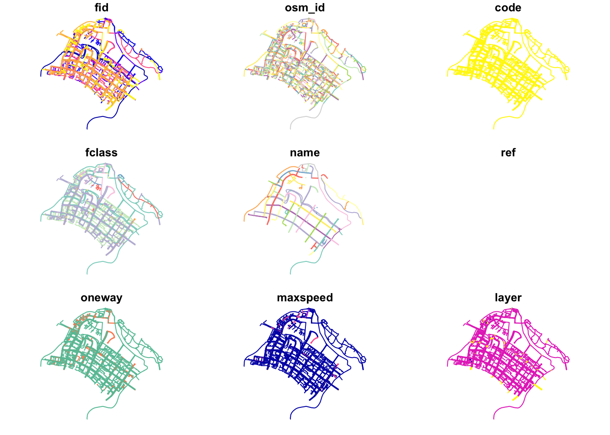
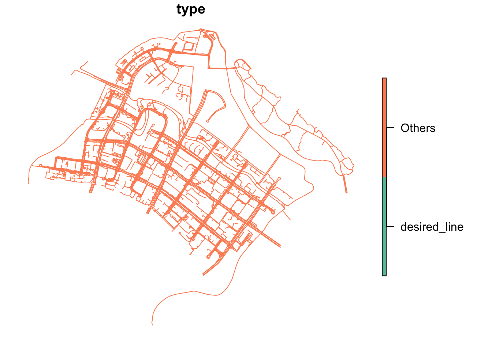

pacman::p_load(sf, sfdep, tmap, tidyverse, spdep)Geospatial Analysis using OneMap Data
Data Analysis
Reading shapefiles that were exported from our qgis geopackage:
desired_lines <- st_read(dsn = "data/geospatial",
layer = "desired_lines")Reading layer `desired_lines' from data source
`/Users/shanellelam/Library/CloudStorage/OneDrive-SingaporeManagementUniversity/School/Year 3/chanelelele/fyp-netlify-shan/fyp netlify/Analysis/Geographic Analysis/data/geospatial'
using driver `ESRI Shapefile'
Simple feature collection with 3904 features and 12 fields
Geometry type: LINESTRING
Dimension: XY
Bounding box: xmin: 34031.82 ymin: 40392.88 xmax: 38881.06 ymax: 44812.07
Projected CRS: SVY21 / Singapore TMplot(desired_lines)
target_buildings <- st_read(dsn = "data/geospatial",
layer = "target_buildings")Reading layer `target_buildings' from data source
`/Users/shanellelam/Library/CloudStorage/OneDrive-SingaporeManagementUniversity/School/Year 3/chanelelele/fyp-netlify-shan/fyp netlify/Analysis/Geographic Analysis/data/geospatial'
using driver `ESRI Shapefile'
Simple feature collection with 9554 features and 7 fields (with 1 geometry empty)
Geometry type: MULTIPOLYGON
Dimension: XY
Bounding box: xmin: 26581.25 ymin: 33134.58 xmax: 44722.63 ymax: 44778.11
Projected CRS: SVY21 / Singapore TMplot(target_buildings)
mpsz <- st_read(dsn = "data/geospatial",
layer = "MP14_SUBZONE_WEB_PL")Reading layer `MP14_SUBZONE_WEB_PL' from data source
`/Users/shanellelam/Library/CloudStorage/OneDrive-SingaporeManagementUniversity/School/Year 3/chanelelele/fyp-netlify-shan/fyp netlify/Analysis/Geographic Analysis/data/geospatial'
using driver `ESRI Shapefile'
Simple feature collection with 323 features and 15 fields
Geometry type: MULTIPOLYGON
Dimension: XY
Bounding box: xmin: 2667.538 ymin: 15748.72 xmax: 56396.44 ymax: 50256.33
Projected CRS: SVY21mpsz2 <- as_Spatial(mpsz)st_crs(mpsz2)Coordinate Reference System:
User input: SVY21
wkt:
PROJCRS["SVY21",
BASEGEOGCRS["SVY21[WGS84]",
DATUM["World Geodetic System 1984",
ELLIPSOID["WGS 84",6378137,298.257223563,
LENGTHUNIT["metre",1]],
ID["EPSG",6326]],
PRIMEM["Greenwich",0,
ANGLEUNIT["Degree",0.0174532925199433]]],
CONVERSION["unnamed",
METHOD["Transverse Mercator",
ID["EPSG",9807]],
PARAMETER["Latitude of natural origin",1.36666666666667,
ANGLEUNIT["Degree",0.0174532925199433],
ID["EPSG",8801]],
PARAMETER["Longitude of natural origin",103.833333333333,
ANGLEUNIT["Degree",0.0174532925199433],
ID["EPSG",8802]],
PARAMETER["Scale factor at natural origin",1,
SCALEUNIT["unity",1],
ID["EPSG",8805]],
PARAMETER["False easting",28001.642,
LENGTHUNIT["metre",1],
ID["EPSG",8806]],
PARAMETER["False northing",38744.572,
LENGTHUNIT["metre",1],
ID["EPSG",8807]]],
CS[Cartesian,2],
AXIS["(E)",east,
ORDER[1],
LENGTHUNIT["metre",1,
ID["EPSG",9001]]],
AXIS["(N)",north,
ORDER[2],
LENGTHUNIT["metre",1,
ID["EPSG",9001]]]]extracting study areas:
pg = mpsz2[mpsz2@data$PLN_AREA_N == "PUNGGOL",]
amk = mpsz2[mpsz2@data$PLN_AREA_N == "ANG MO KIO",]#par(mfrow=c(2,2), mar = c(4, 4, 2, 1))
#plot(pg, main = "Punggol")
#plot(amk, main = "Ang Mo Kio")